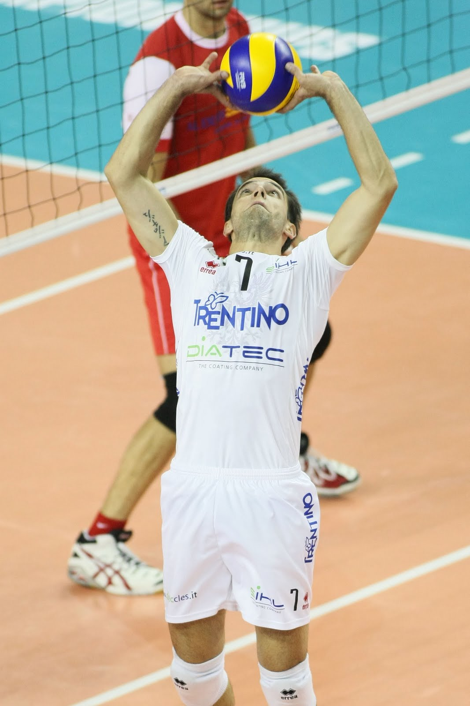
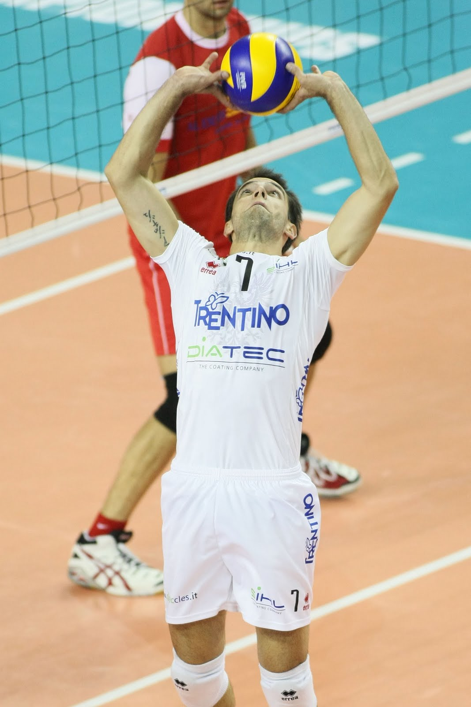

Setting a volleyball is a crucial skill that involves precise hand positioning, footwork, and decision-making to create effective offensive plays.
- Hand Positioning: Form a diamond shape with your fingers by touching your thumbs and index fingers together. This creates a stable platform for the ball. Use soft hands to cradle the ball gently, allowing it to roll off your fingertips smoothly for a precise trajectory.
- Footwork and Body Positioning: Stand with your feet shoulder-width apart and knees slightly bent, ready to move quickly. Position yourself about one arm's length away from the net, facing your target. This athletic stance helps maintain balance and control while setting.
- Setting Motion: As the ball approaches, bring it close to your forehead. Use your legs for added power and aim to set the ball high and close to the net for your hitters to attack effectively. Ensure your body is aligned with your target to enhance accuracy.
Youtube Tutorial

 
